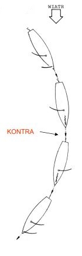

Żeglarstwo
Żeglarstwo
Teoria Manewrowania
"Manewrowania jachtem nie można nauczyć się z żadnej książki. Sztukę tą każdy żeglarz musi opanować sam. Nie istnieje jedna słuszna i skuteczna recepta na dany manewr. Istnieją tzw. zasady dobrej praktyki żeglarskiej, które powinno się znać i stosować podczas manewrowania."
Zwrot przez sztag

ZWROT PRZEZ SZTAG - prawidłowo wykonany polega na przejściu
dziobem linii wiatru z kursu bajdewind jednego halsu do kursu
bajdewind drugiego halsu bez tracenia prędkości manewrowej.
- Przed zwrotem jacht musi mieć odpowiednią inercję.
- Zwrot rozpoczynamy i kończymy zawsze w bajdewindzie
- Przed zwrotem jacht musi mieć odpowiednią inercję.
- Zwrot rozpoczynamy i kończymy zawsze w bajdewindzie
Zwrot przez rufę

ZWROT PRZEZ RUFĘ - prawidłowo wykonany polega na przejściu
rufą linii wiatru z kursu baksztag jednego halsu do kursu baksztag
drugiego halsu.
- Zwrot rozpoczynamy i kończymy zawsze w baksztagu
- Bardzo ważny jest moment kiedy zaobserwujemy, że fok zgaśnie
- W momencie kiedy grot łapie wiatr na zmienionym halsie
wykonujemy kontrę
- Zwrot ten wymaga uwagi i koncentracji, gdyż opóźnienie w kolejności wykonywanych czynności może
kosztować wywrotkę jachtu.
- W trakcie wykonywania manewru osoba za sterem wydaje komendy i sama dba o to kiedy rozpocząć i
zakończyć cyrkulację oraz kiedy wykonać kontrę.
- Aby zwrot przebiegał spokojnie można wstrzymać cyrkulację i zmienić hals na grocie podczas jazdy w
fordewindzie.
- Należy pamiętać o tym, że zwrot przez rufę zajmuje dużo więcej przestrzeni na
wodzie niż zwrot przez sztag. Trudniej też jest ocenić pozycję jachtu po zwrocie
- Zwrot rozpoczynamy i kończymy zawsze w baksztagu
- Bardzo ważny jest moment kiedy zaobserwujemy, że fok zgaśnie
- W momencie kiedy grot łapie wiatr na zmienionym halsie wykonujemy kontrę
- Zwrot ten wymaga uwagi i koncentracji, gdyż opóźnienie w kolejności wykonywanych czynności może kosztować wywrotkę jachtu.
- W trakcie wykonywania manewru osoba za sterem wydaje komendy i sama dba o to kiedy rozpocząć i zakończyć cyrkulację oraz kiedy wykonać kontrę.
- Aby zwrot przebiegał spokojnie można wstrzymać cyrkulację i zmienić hals na grocie podczas jazdy w fordewindzie.
- Należy pamiętać o tym, że zwrot przez rufę zajmuje dużo więcej przestrzeni na wodzie niż zwrot przez sztag. Trudniej też jest ocenić pozycję jachtu po zwrocie